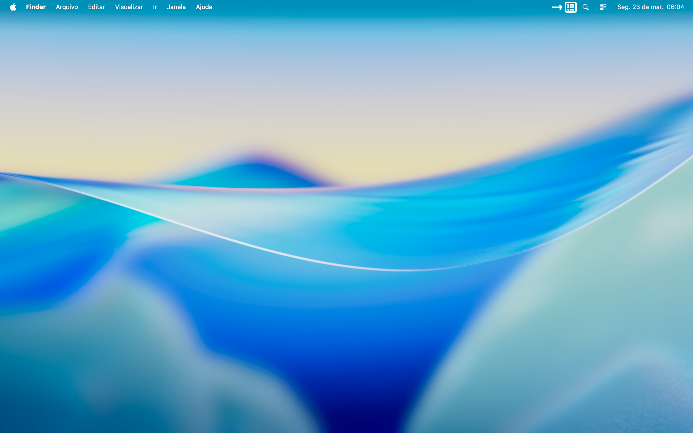
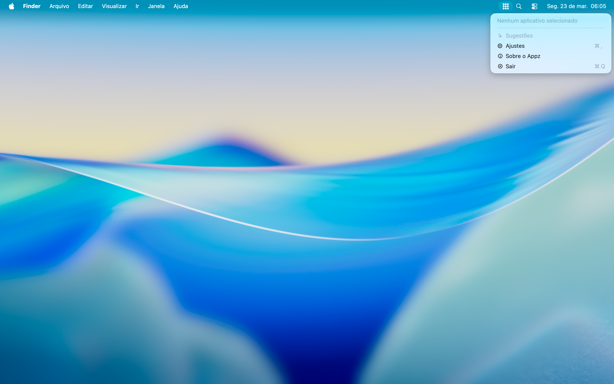
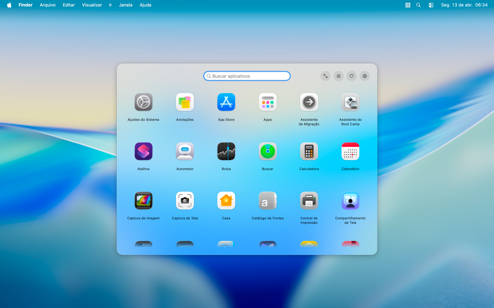
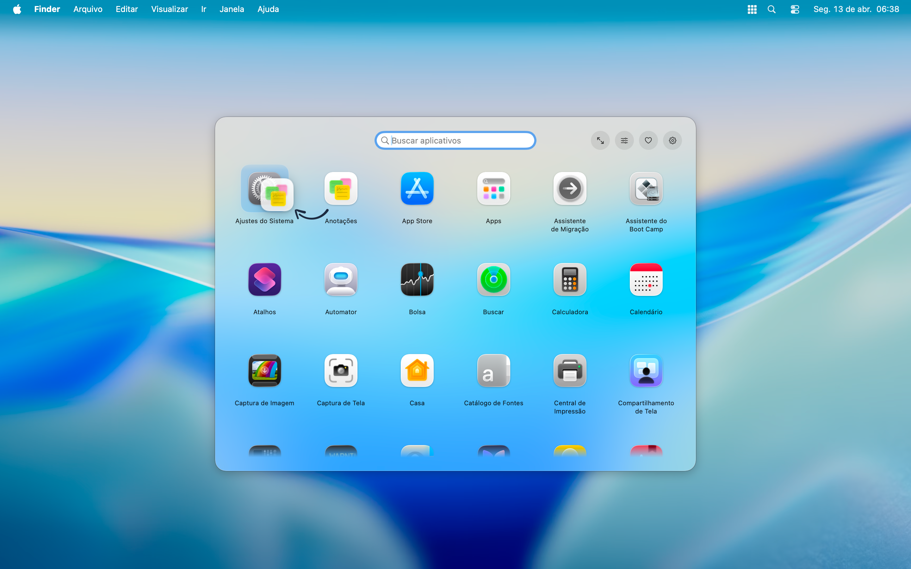
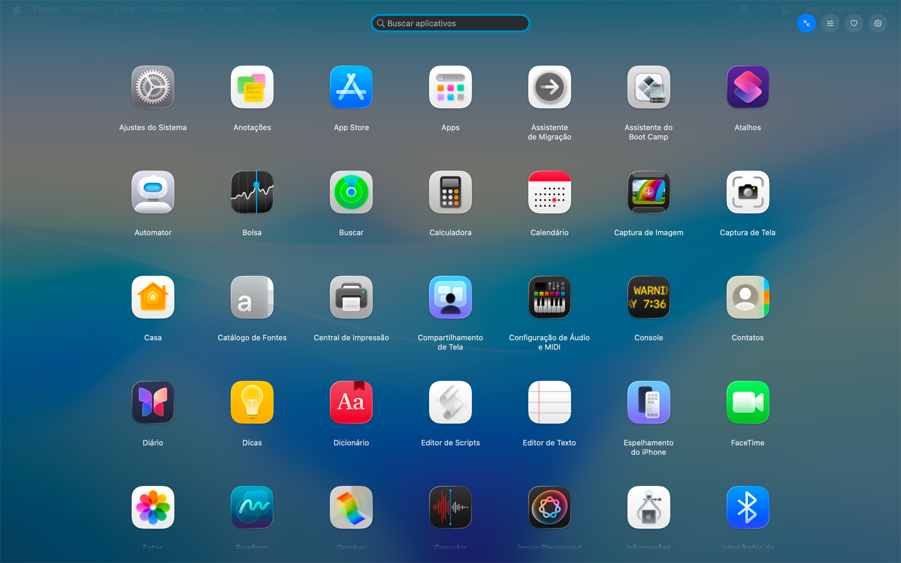
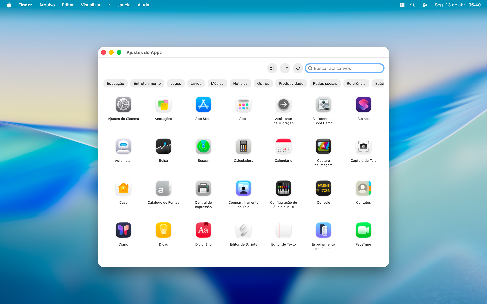
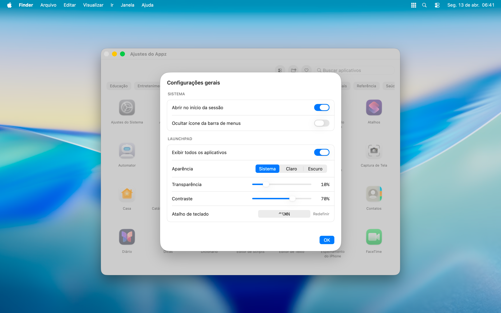
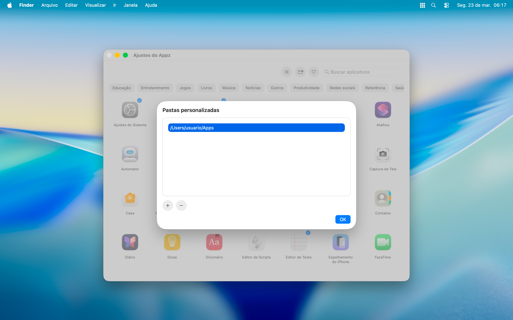
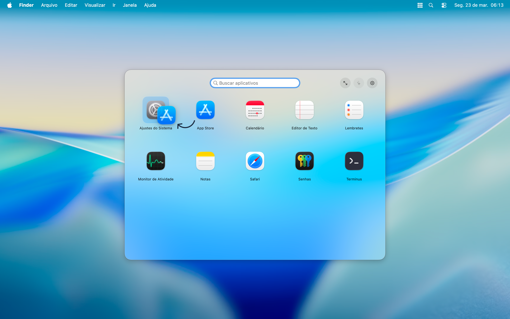
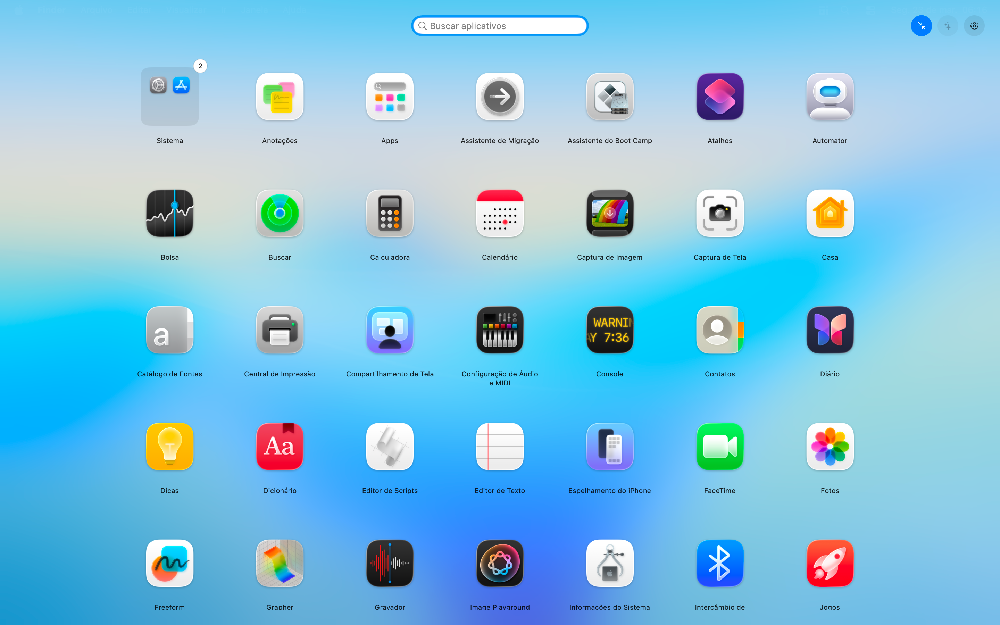

Barra de menus
Tenha seus aplicativos favoritos disponíveis na barra de menus do macOS.
Appz é um launcher para macOS focado em simplicidade. Acesse seus aplicativos favoritos pela barra de menus ou pelo Launchpad personalizado.








Tenha seus aplicativos favoritos disponíveis na barra de menus do macOS.
Acesse o Appz de qualquer lugar com um atalho global.
Crie grupos de aplicativos e organize o Launchpad do seu jeito.
Crie novos grupos ou adicione aplicativos nos grupos existentes.
O Appz observa seu padrão de uso e sugere os aplicativos que você mais usa.
Prefere um visual mais limpo? Oculte o ícone da barra de menus.
Nos ajustes do Appz, acesse as configurações gerais e escolha se deseja permitir que o Appz abra no início da sessão, ocultar o ícone da barra de menus ou personalizar o Launchpad.

O Appz busca os aplicativos instalados no seu Mac, mas você pode adicionar pastas personalizadas contendo os aplicativos que não foram instalados no sistema.

Clique no aplicativo para marcá-lo como favorito. Clique novamente para desmarcá-lo.
Os grupos ajudam a organizar os aplicativos no Launchpad. Você pode criar grupos arrastando um aplicativo sobre o outro.

Escolha como deseja usar o Launchpad, alternando entre os modos janela ou tela cheia.

O Appz não coleta, não armazena e não transmite nenhum dado pessoal ou informações de uso.
O Appz não exige cadastro, conta ou login, e o uso do software não está vinculado a nenhuma identidade individual.
O Appz não implementa recursos de rastreabilidade (como Trackers de terceiros, SDKs de análise ou telemetria). Não são utilizados cookies ou tecnologias semelhantes para monitorar seu comportamento.
Todo o processamento necessário para as funções do Appz (indexação de aplicativos, busca e execução de comandos) ocorre exclusivamente no seu dispositivo. Nenhum dado é enviado para servidores externos ou para a nuvem.
O Appz não integra serviços de terceiros.
Para dúvidas e esclarecimentos, entre em contato através do e-mail indicado nesta página.